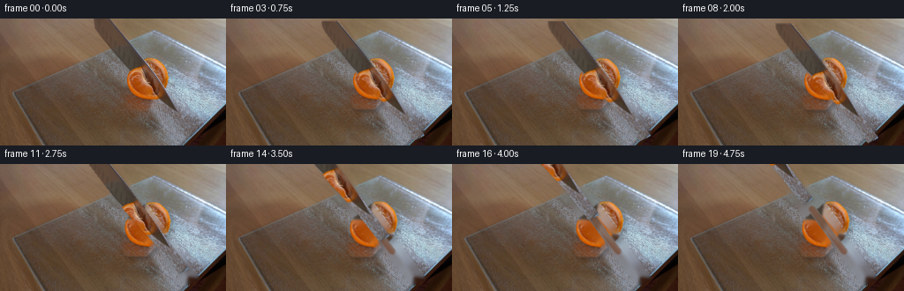
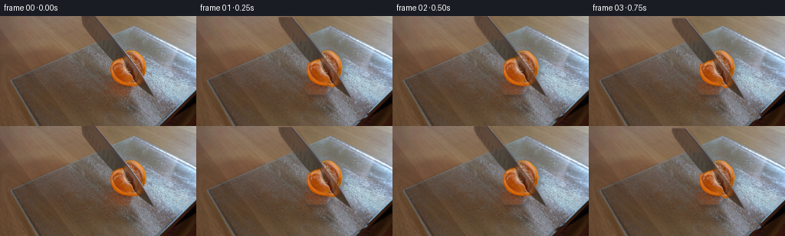
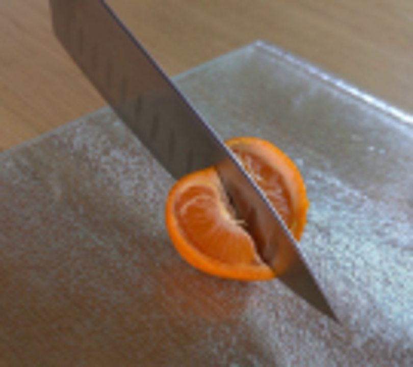
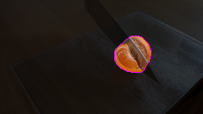
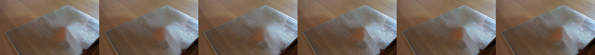

CODING AGENTS AS PIXEL WORLD MODELS
traex/GPT-5.6-Sol · 0040
点击播放 · 原生 RGB 像素
逐轮保存的候选
回放视频、检查图与代码变化。
每份候选均可单独播放。实际图片检查记录在下方工具轨迹中。
候选 01播放与检查图
点击播放 · 原生 RGB 像素

展开代码变化
--- 上一保存版本
+++ 本次保存版本
@@ -0,0 +1,147 @@
+from pathlib import Path
+import cv2
+import numpy as np
+from PIL import Image
+import artifact_io
+
+# Analytic 2-D continuation of the photographed demonstration. The photographed
+# pixels are retained as textures; only the knife and the two new citrus pieces
+# are displaced.
+ROOT = Path(__file__).resolve().parent
+src = np.asarray(Image.open(ROOT / "first_frame.png").convert("RGB"), dtype=np.uint8)
+H, W = src.shape[:2]
+
+def soft_mask(binary, sigma=0.65):
+ m = binary.astype(np.float32)
+ if sigma:
+ m = cv2.GaussianBlur(m, (0, 0), sigma)
+ return np.clip(m, 0.0, 1.0)
+
+def translate_layer(rgb, alpha, dx, dy):
+ M = np.float32([[1, 0, dx], [0, 1, dy]])
+ # Warp premultiplied colour so fine rind/blade edges do not acquire halos.
+ premul = rgb.astype(np.float32) * alpha[..., None]
+ wp = cv2.warpAffine(premul, M, (W, H), flags=cv2.INTER_CUBIC,
+ borderMode=cv2.BORDER_CONSTANT, borderValue=0)
+ wa = cv2.warpAffine(alpha, M, (W, H), flags=cv2.INTER_CUBIC,
+ borderMode=cv2.BORDER_CONSTANT, borderValue=0)
+ wa = np.clip(wa, 0, 1)
+ out = np.zeros_like(wp)
+ nz = wa > .004
+ out[nz] = wp[nz] / wa[nz, None]
+ return np.clip(out, 0, 255), wa
+
+def over(canvas, layer, alpha):
+ return canvas * (1.0 - alpha[..., None]) + layer * alpha[..., None]
+
+# Isolate the orange with colour evidence and use its convex silhouette. The
+# convex outline is appropriate here because the subject is a hemispherical half.
+bgr = cv2.cvtColor(src, cv2.COLOR_RGB2BGR)
+hsv = cv2.cvtColor(bgr, cv2.COLOR_BGR2HSV)
+roi = np.zeros((H, W), np.uint8)
+roi[38:103, 133:202] = 1
+orange = ((hsv[..., 1] > 82) & (hsv[..., 0] < 34) &
+ (src[..., 0] > 105) & (roi > 0)).astype(np.uint8) * 255
+orange = cv2.morphologyEx(orange, cv2.MORPH_CLOSE,
+ cv2.getStructuringElement(cv2.MORPH_ELLIPSE, (7, 7)))
+contours, _ = cv2.findContours(orange, cv2.RETR_EXTERNAL, cv2.CHAIN_APPROX_SIMPLE)
+points = np.concatenate([c for c in contours if cv2.contourArea(c) > 5])
+hull = cv2.convexHull(points)
+fruit_binary = np.zeros((H, W), np.uint8)
+cv2.fillConvexPoly(fruit_binary, hull, 1)
+fruit_alpha = soft_mask(fruit_binary, .70)
+
+# Blade silhouette follows its two photographed cutting edges. It enters from
+# above and ends in a sharp point on the board.
+blade_binary = np.zeros((H, W), np.uint8)
+blade_poly = np.array([[104, 0], [126, 0], [222, 129], [211, 135],
+ [184, 101], [151, 65], [111, 13]], np.int32)
+cv2.fillPoly(blade_binary, [blade_poly], 1)
+blade_alpha = soft_mask(blade_binary, .42)
+
+# Make a clean board plate by removing both moving subjects. Telea interpolation
+# preserves the low-frequency wood and frosted-glass appearance in vacated areas.
+remove = np.maximum(fruit_binary, blade_binary)
+remove = cv2.dilate(remove, cv2.getStructuringElement(cv2.MORPH_ELLIPSE, (7, 7)))
+base = cv2.inpaint(bgr, (remove * 255).astype(np.uint8), 5, cv2.INPAINT_TELEA)
+base = cv2.cvtColor(base, cv2.COLOR_BGR2RGB).astype(np.float32)
+
+# Reconstruct the small strip of fruit hidden by the blade. Its immediate
+# citrus neighbours provide convincing pulp/rind texture for the newly cut edge.
+inside_blade = ((blade_binary > 0) & (fruit_binary > 0)).astype(np.uint8)
+inside_blade = cv2.dilate(inside_blade, np.ones((3, 3), np.uint8))
+fruit_tex_bgr = cv2.inpaint(bgr, (inside_blade * 255).astype(np.uint8), 3,
+ cv2.INPAINT_TELEA)
+fruit_tex = cv2.cvtColor(fruit_tex_bgr, cv2.COLOR_BGR2RGB).astype(np.float32)
+blade_tex = src.astype(np.float32)
+
+# Divide along the observed knife axis. Smooth complementary masks make the two
+# pieces exactly reassemble before separation.
+yy, xx = np.mgrid[0:H, 0:W]
+# Axis direction roughly (0.59, 0.81), normal (-0.81, 0.59).
+signed = -0.808 * (xx - 167.0) + 0.589 * (yy - 72.0)
+transition = np.clip(.5 + signed / 1.2, 0, 1)
+piece_a = fruit_alpha * transition
+piece_b = fruit_alpha * (1.0 - transition)
+
+frames = [src.copy()]
+for i in range(1, 20):
+ # First a short real-time draw cut, then the knife is smoothly withdrawn.
+ if i <= 8:
+ u = i / 8.0
+ ease = u * u * (3 - 2 * u)
+ saw = np.sin(i * np.pi * .72)
+ kx = 4.8 * ease + 1.0 * saw
+ ky = 6.5 * ease + 1.35 * saw
+ else:
+ u = (i - 8) / 11.0
+ ease = u * u * (3 - 2 * u)
+ kx = 4.8 * (1 - ease) - 70.0 * ease
+ ky = 6.5 * (1 - ease) - 90.0 * ease
+
+ # The cut begins only as the blade reaches the board; pieces settle apart by
+ # a few pixels perpendicular to the cut rather than unnaturally flying away.
+ sep_u = np.clip((i - 5) / 9.0, 0, 1)
+ sep = 4.3 * (sep_u * sep_u * (3 - 2 * sep_u))
+ ax, ay = -0.808 * sep, 0.589 * sep
+ bx, by = 0.808 * sep, -0.589 * sep
+
+ canvas = base.copy()
+
+ # Soft contact shadows remain locked to the glass surface.
+ shadow_a = cv2.warpAffine(piece_a, np.float32([[1, 0, ax + 2.6], [0, 1, ay + 3.5]]),
+ (W, H), flags=cv2.INTER_LINEAR, borderValue=0)
+ shadow_b = cv2.warpAffine(piece_b, np.float32([[1, 0, bx + 2.6], [0, 1, by + 3.5]]),
+ (W, H), flags=cv2.INTER_LINEAR, borderValue=0)
+ shadow = cv2.GaussianBlur(np.maximum(shadow_a, shadow_b), (0, 0), 2.4) * .25
+ canvas *= (1.0 - shadow[..., None])
+
+ # Warm, narrow freshly exposed seam visible after the blade starts to leave.
+ if i >= 8:
+ seam = np.zeros((H, W), np.uint8)
+ p0 = (151, 50); p1 = (188, 99)
+ cv2.line(seam, p0, p1, 255, max(1, int(round(sep * 1.25))), cv2.LINE_AA)
+ seam_a = cv2.GaussianBlur(seam.astype(np.float32) / 255., (0, 0), .6)
+ seam_strength = min(1.0, (i - 7) / 5.0)
+ seam_col = np.zeros_like(canvas)
+ seam_col[:] = (112, 49, 14)
+ canvas = over(canvas, seam_col, seam_a * .48 * seam_strength)
+
+ la, aa = translate_layer(fruit_tex, piece_a, ax, ay)
+ lb, ab = translate_layer(fruit_tex, piece_b, bx, by)
+ canvas = over(canvas, la, aa)
+ canvas = over(canvas, lb, ab)
+
+ # Blade casts a faint, tight shadow, particularly during board contact.
+ _, ka = translate_layer(blade_tex, blade_alpha, kx + 2.1, ky + 2.0)
+ kshadow = cv2.GaussianBlur(ka, (0, 0), 1.6) * (0.20 if i <= 9 else 0.11)
+ canvas *= (1.0 - kshadow[..., None])
+ knife, kalpha = translate_layer(blade_tex, blade_alpha, kx, ky)
+ canvas = over(canvas, knife, kalpha)
+
+ frames.append(np.clip(canvas + .5, 0, 255).astype(np.uint8))
+
+frames = np.stack(frames, axis=0)
+assert frames.shape == (20, 144, 256, 3) and frames.dtype == np.uint8
+assert np.array_equal(frames[0], src)
+artifact_io.save(frames, ROOT)
候选 02播放与检查图
点击播放 · 原生 RGB 像素


展开代码变化
--- 上一保存版本
+++ 本次保存版本
@@ -96,8 +96,8 @@
else:
u = (i - 8) / 11.0
ease = u * u * (3 - 2 * u)
- kx = 4.8 * (1 - ease) - 70.0 * ease
- ky = 6.5 * (1 - ease) - 90.0 * ease
+ kx = 4.8 * (1 - ease) - 3.2 * ease
+ ky = 6.5 * (1 - ease) - 5.0 * ease
# The cut begins only as the blade reaches the board; pieces settle apart by
# a few pixels perpendicular to the cut rather than unnaturally flying away.
候选 03播放与检查图
可观测工具轨迹
实际执行的命令与返回图片。
命令 1exit 0
/bin/bash -lc "cat GENERATION_RULES.md && printf '\\n---PROMPT---\\n' && cat prompt.txt"
命令 2exit 0
/bin/bash -lc "find . -maxdepth 2 -type f -printf '%p %s bytes\\n' | sort"
命令 3exit 0
/bin/bash -lc "sed -n '1,240p' artifact_io.py"
命令 4exit 0
/bin/bash -lc "python - <<'PY'
try:
import cv2; print('cv2',cv2.__version__)
except Exception as e: print('no cv2',e)
try:
import PIL; print('PIL',PIL.__version__)
except Exception as e: print('no PIL',e)
try:
import scipy; print('scipy',scipy.__version__)
except Exception as e: print('no scipy',e)
PY"命令 5exit 0
/bin/bash -lc "python - <<'PY'
from PIL import Image
im=Image.open('first_frame.png')
im.crop((90,0,225,120)).resize((810,720)).save('.tmp/crop.png')
PY"命令 6exit 0
/bin/bash -lc "python - <<'PY'
import cv2
im=cv2.imread('first_frame.png')
g=cv2.cvtColor(im,cv2.COLOR_BGR2GRAY)
e=cv2.Canny(g,70,140)
ls=cv2.HoughLinesP(e,1,3.14159/180,30,minLineLength=25,maxLineGap=8)
for x in sorted([tuple(a[0]) for a in ls], key=lambda p: -((p[2]-p[0])**2+(p[3]-p[1])**2))[:30]: print(x)
cv2.imwrite('.tmp/edges.png',e)
PY"命令 7exit 0
/bin/bash -lc "cat > .tmp/masktest.py <<'PY'
import cv2, numpy as np
im=cv2.imread('first_frame.png')
hsv=cv2.cvtColor(im,cv2.COLOR_BGR2HSV)
roi=np.zeros(im.shape[:2],np.uint8); roi[38:101,135:200]=1
m=((hsv[:,:,1]>110)&(hsv[:,:,0]<30)&(im[:,:,2]>125)&(roi>0)).astype(np.uint8)*255
m=cv2.morphologyEx(m,cv2.MORPH_CLOSE,np.ones((5,5),np.uint8))
cs,_=cv2.findContours(m,cv2.RETR_EXTERNAL,cv2.CHAIN_APPROX_SIMPLE)
pts=np.concatenate([c for c in cs if cv2.contourArea(c)>5])
h=cv2.convexHull(pts)
mask=np.zeros_like(m); cv2.fillConvexPoly(mask,h,255)
# smooth
vis=im.copy(); vis[mask==0]=(vis[mask==0]*.25).astype(np.uint8)
cv2.polylines(vis,[h],True,(255,0,255),1)
cv2.imwrite('.tmp/maskvis.png',vis)
print(cv2.boundingRect(h),cv2.contourArea(h),len(cs))
PY
python .tmp/masktest.py"命令 8exit 0
/bin/bash -lc "cat > generate.py <<'PY'
from pathlib import Path
import cv2
import numpy as np
from PIL import Image
import artifact_io
# Analytic 2-D continuation of the photographed demonstration. The photographed
# pixels are retained as textures; only the knife and the two new citrus pieces
# are displaced.
ROOT = Path(__file__).resolve().parent
src = np.asarray(Image.open(ROOT / \"first_frame.png\").convert(\"RGB\"), dtype=np.uint8)
H, W = src.shape[:2]
def soft_mask(binary, sigma=0.65):
m = binary.astype(np.float32)
if sigma:
m = cv2.GaussianBlur(m, (0, 0), sigma)
return np.clip(m, 0.0, 1.0)
def translate_layer(rgb, alpha, dx, dy):
M = np.float32([[1, 0, dx], [0, 1, dy]])
# Warp premultiplied colour so fine rind/blade edges do not acquire halos.
premul = rgb.astype(np.float32) * alpha[..., None]
wp = cv2.warpAffine(premul, M, (W, H), flags=cv2.INTER_CUBIC,
borderMode=cv2.BORDER_CONSTANT, borderValue=0)
wa = cv2.warpAffine(alpha, M, (W, H), flags=cv2.INTER_CUBIC,
borderMode=cv2.BORDER_CONSTANT, borderValue=0)
wa = np.clip(wa, 0, 1)
out = np.zeros_like(wp)
nz = wa > .004
out[nz] = wp[nz] / wa[nz, None]
return np.clip(out, 0, 255), wa
def over(canvas, layer, alpha):
return canvas * (1.0 - alpha[..., None]) + layer * alpha[..., None]
# Isolate the orange with colour evidence and use its convex silhouette. The
# convex outline is appropriate here because the subject is a hemispherical half.
bgr = cv2.cvtColor(src, cv2.COLOR_RGB2BGR)
hsv = cv2.cvtColor(bgr, cv2.COLOR_BGR2HSV)
roi = np.zeros((H, W), np.uint8)
roi[38:103, 133:202] = 1
orange = ((hsv[..., 1] > 82) & (hsv[..., 0] < 34) &
(src[..., 0] > 105) & (roi > 0)).astype(np.uint8) * 255
orange = cv2.morphologyEx(orange, cv2.MORPH_CLOSE,
cv2.getStructuringElement(cv2.MORPH_ELLIPSE, (7, 7)))
contours, _ = cv2.findContours(orange, cv2.RETR_EXTERNAL, cv2.CHAIN_APPROX_SIMPLE)
points = np.concatenate([c for c in contours if cv2.contourArea(c) > 5])
hull = cv2.convexHull(points)
fruit_binary = np.zeros((H, W), np.uint8)
cv2.fillConvexPoly(fruit_binary, hull, 1)
fruit_alpha = soft_mask(fruit_binary, .70)
# Blade silhouette follows its two photographed cutting edges. It enters from
# above and ends in a sharp point on the board.
blade_binary = np.zeros((H, W), np.uint8)
blade_poly = np.array([[104, 0], [126, 0], [222, 129], [211, 135],
[184, 101], [151, 65], [111, 13]], np.int32)
cv2.fillPoly(blade_binary, [blade_poly], 1)
blade_alpha = soft_mask(blade_binary, .42)
# Make a clean board plate by removing both moving subjects. Telea interpolation
# preserves the low-frequency wood and frosted-glass appearance in vacated areas.
remove = np.maximum(fruit_binary, blade_binary)
remove = cv2.dilate(remove, cv2.getStructuringElement(cv2.MORPH_ELLIPSE, (7, 7)))
base = cv2.inpaint(bgr, (remove * 255).astype(np.uint8), 5, cv2.INPAINT_TELEA)
base = cv2.cvtColor(base, cv2.COLOR_BGR2RGB).astype(np.float32)
# Reconstruct the small strip of fruit hidden by the blade. Its immediate
# citrus neighbours provide convincing pulp/rind texture for the newly cut edge.
inside_blade = ((blade_binary > 0) & (fruit_binary > 0)).astype(np.uint8)
inside_blade = cv2.dilate(inside_blade, np.ones((3, 3), np.uint8))
fruit_tex_bgr = cv2.inpaint(bgr, (inside_blade * 255).astype(np.uint8), 3,
cv2.INPAINT_TELEA)
fruit_tex = cv2.cvtColor(fruit_tex_bgr, cv2.COLOR_BGR2RGB).astype(np.float32)
blade_tex = src.astype(np.float32)
# Divide along the observed knife axis. Smooth complementary masks make the two
# pieces exactly reassemble before separation.
yy, xx = np.mgrid[0:H, 0:W]
# Axis direction roughly (0.59, 0.81), normal (-0.81, 0.59).
signed = -0.808 * (xx - 167.0) + 0.589 * (yy - 72.0)
transition = np.clip(.5 + signed / 1.2, 0, 1)
piece_a = fruit_alpha * transition
piece_b = fruit_alpha * (1.0 - transition)
frames = [src.copy()]
for i in range(1, 20):
# First a short real-time draw cut, then the knife is smoothly withdrawn.
if i <= 8:
u = i / 8.0
ease = u * u * (3 - 2 * u)
saw = np.sin(i * np.pi * .72)
kx = 4.8 * ease + 1.0 * saw
ky = 6.5 * ease + 1.35 * saw
else:
u = (i - 8) / 11.0
ease = u * u * (3 - 2 * u)
kx = 4.8 * (1 - ease) - 70.0 * ease
ky = 6.5 * (1 - ease) - 90.0 * ease
# The cut begins only as the blade reaches the board; pieces settle apart by
# a few pixels perpendicular to the cut rather than unnaturally flying away.
sep_u = np.clip((i - 5) / 9.0, 0, 1)
sep = 4.3 * (sep_u * sep_u * (3 - 2 * sep_u))
ax, ay = -0.808 * sep, 0.589 * sep
bx, by = 0.808 * sep, -0.589 * sep
canvas = base.copy()
# Soft contact shadows remain locked to the glass surface.
shadow_a = cv2.warpAffine(piece_a, np.float32([[1, 0, ax + 2.6], [0, 1, ay + 3.5]]),
(W, H), flags=cv2.INTER_LINEAR, borderValue=0)
shadow_b = cv2.warpAffine(piece_b, np.float32([[1, 0, bx + 2.6], [0, 1, by + 3.5]]),
(W, H), flags=cv2.INTER_LINEAR, borderValue=0)
shadow = cv2.GaussianBlur(np.maximum(shadow_a, shadow_b), (0, 0), 2.4) * .25
canvas *= (1.0 - shadow[..., None])
# Warm, narrow freshly exposed seam visible after the blade starts to leave.
if i >= 8:
seam = np.zeros((H, W), np.uint8)
p0 = (151, 50); p1 = (188, 99)
cv2.line(seam, p0, p1, 255, max(1, int(round(sep * 1.25))), cv2.LINE_AA)
seam_a = cv2.GaussianBlur(seam.astype(np.float32) / 255., (0, 0), .6)
seam_strength = min(1.0, (i - 7) / 5.0)
seam_col = np.zeros_like(canvas)
seam_col[:] = (112, 49, 14)
canvas = over(canvas, seam_col, seam_a * .48 * seam_strength)
la, aa = translate_layer(fruit_tex, piece_a, ax, ay)
lb, ab = translate_layer(fruit_tex, piece_b, bx, by)
canvas = over(canvas, la, aa)
canvas = over(canvas, lb, ab)
# Blade casts a faint, tight shadow, particularly during board contact.
_, ka = translate_layer(blade_tex, blade_alpha, kx + 2.1, ky + 2.0)
kshadow = cv2.GaussianBlur(ka, (0, 0), 1.6) * (0.20 if i <= 9 else 0.11)
canvas *= (1.0 - kshadow[..., None])
knife, kalpha = translate_layer(blade_tex, blade_alpha, kx, ky)
canvas = over(canvas, knife, kalpha)
frames.append(np.clip(canvas + .5, 0, 255).astype(np.uint8))
frames = np.stack(frames, axis=0)
assert frames.shape == (20, 144, 256, 3) and frames.dtype == np.uint8
assert np.array_equal(frames[0], src)
artifact_io.save(frames, ROOT)
PY
python generate.py"命令 9exit 0
/bin/bash -lc "python - <<'PY'
import cv2,numpy as np
from PIL import Image
im=cv2.imread('first_frame.png')
poly=np.array([[104,0],[126,0],[222,129],[211,135],[184,101],[151,65],[111,13]],np.int32)
m=np.zeros(im.shape[:2],np.uint8);cv2.fillPoly(m,[poly],255)
# fruit included
cv2.ellipse(m,(168,70),(30,27),0,0,360,255,-1)
m=cv2.dilate(m,np.ones((5,5),np.uint8))
outs=[]
for meth in [cv2.INPAINT_TELEA,cv2.INPAINT_NS]:
for r in [3,7,15]:
o=cv2.inpaint(im,m,r,meth); outs.append(o); cv2.imwrite(f'.tmp/inp_{meth}_{r}.png',o)
canvas=np.concatenate(outs,1);cv2.imwrite('.tmp/inpaints.png',canvas)
PY"命令 10exit 0
/bin/bash -lc "python - <<'PY'
p='generate.py'
s=open(p).read()
s=s.replace('kx = 4.8 * (1 - ease) - 70.0 * ease\\n ky = 6.5 * (1 - ease) - 90.0 * ease', 'kx = 4.8 * (1 - ease) - 3.2 * ease\\n ky = 6.5 * (1 - ease) - 5.0 * ease')
open(p,'w').write(s)
PY
python generate.py
python - <<'PY'
import numpy as np
from PIL import Image
f=np.array(Image.open('frames/00.png')); s=np.array(Image.open('first_frame.png'))
print('frame0 exact:',np.array_equal(f,s),'shape:',f.shape)
PY"命令 11exit 0
/bin/bash -lc "python - <<'PY'
import numpy as np
z=np.load('pixels.npz')['pixels']
print(z.shape,z.dtype,len(list(__import__('pathlib').Path('frames').glob('*.png'))))
PY"视觉工具实际返回图片 1

视觉工具实际返回图片 2

视觉工具实际返回图片 3

视觉工具实际返回图片 4

视觉工具实际返回图片 5

视觉工具实际返回图片 6

视觉工具实际返回图片 7

保存候选 3 份；完成命令 11 次；可验证图片返回 7 张。原始 API 响应与完整日志保留在本地。